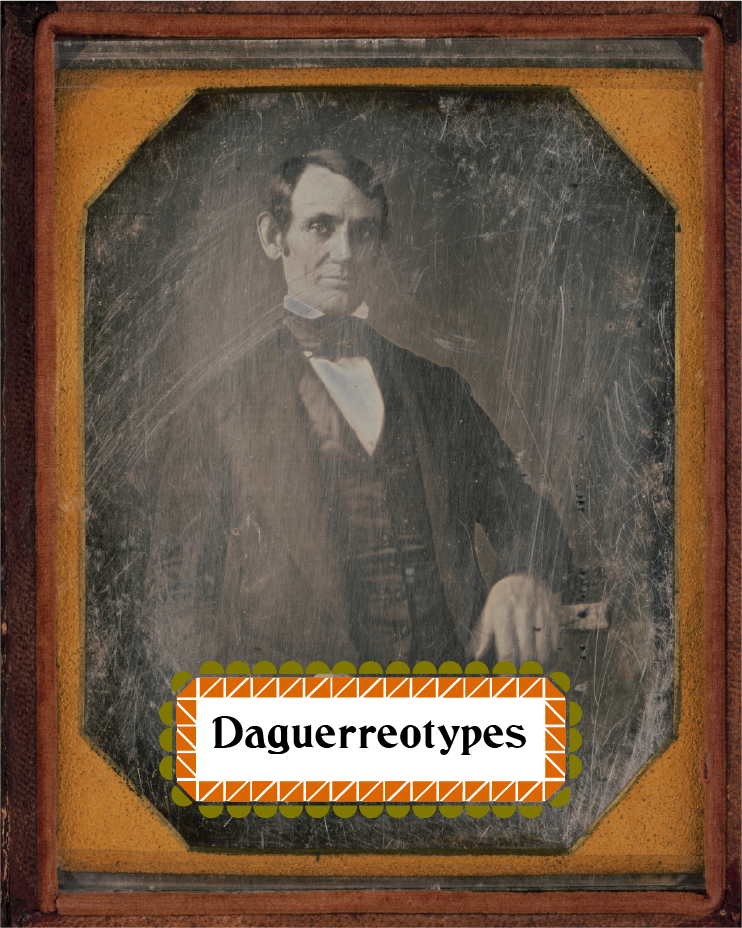

8.5" x 11", Typography II
An exhibit catelog showing off some of the images contained in the Library of Congress “Daguerreotypes” collection.
While this project was technically pretty straight-forwards, it was also one of the most time consuming things I’ve ever completed. It involved, at least in my case, a great deal of research both into the collection itself and the time-frame when Daguerreotypes were the leading form of photography, followed by nearly two months of constant iterration and improvement. Clarity and totallity of information makes for a hard balance to strike.
Created in InDesign.